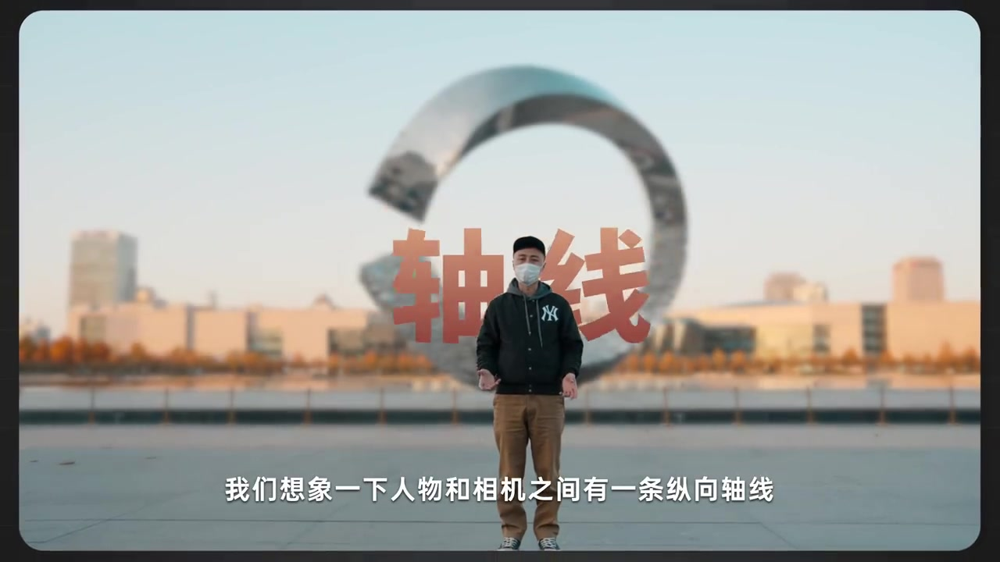
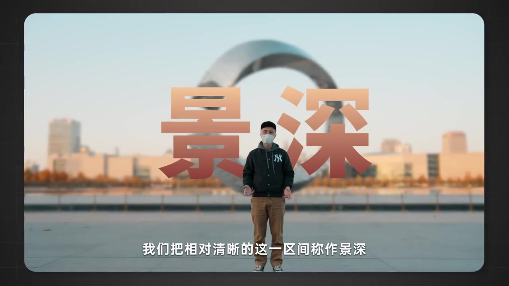
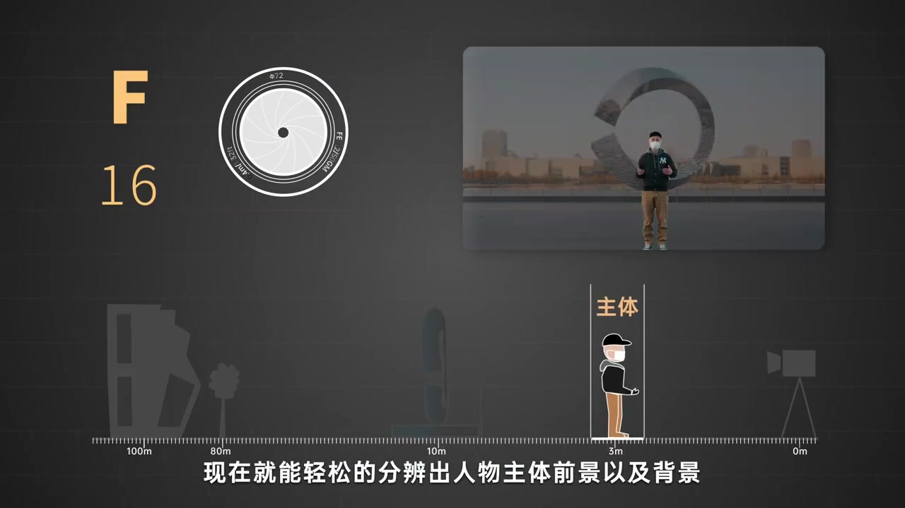
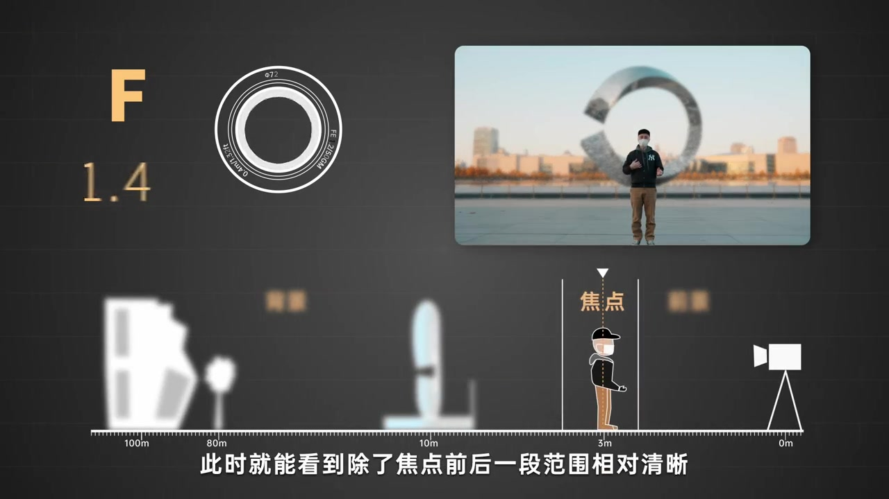
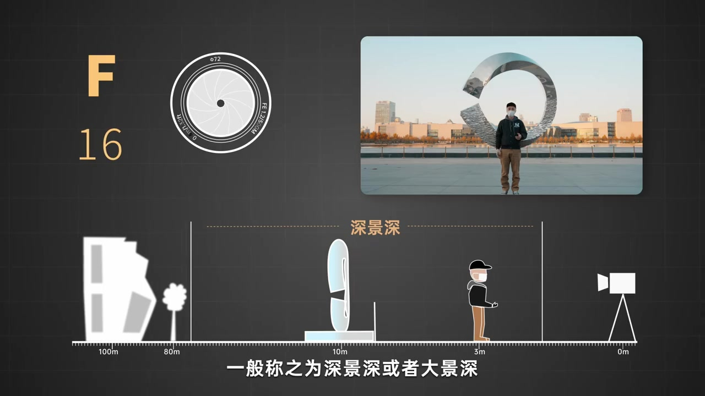
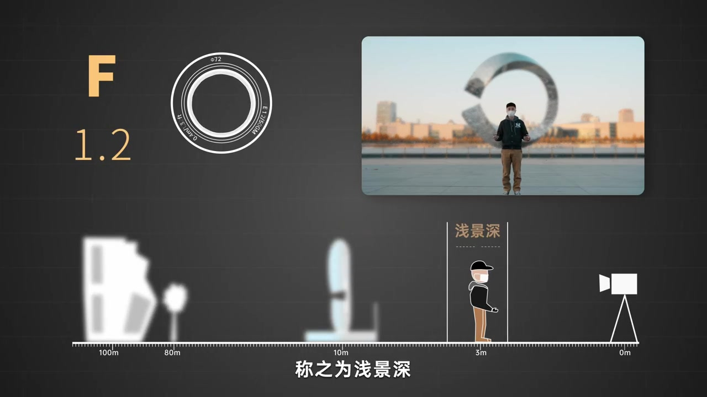
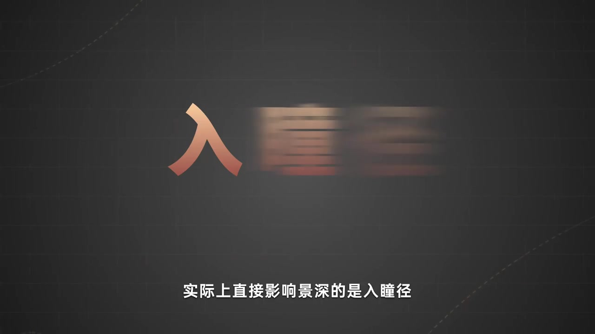

开场：不了解景深，也一定听过背景虚化
这一集是动画摄影科普系列的第三集，主题落到光圈与景深。讲述者先从日常语感切入：就算还不熟悉「景深」，也一定听过「背景虚化」——场景里人物主体清楚，背景却糊成一片。
画面大字：「背景虚化」；口播先把景深与日常观感对齐。
说明：Whisper 将开场「相信就算」误识为「先行就算」。下文叙述以画面字幕与口播语境为准；末尾转录区仍保留全部原始分段。
想象人物与相机之间有一条纵向轴线
画面切到广场人像：口罩男子站在巨型圆环雕塑前，城市天际线在身后。叠字「轴线」压在画面中央，字幕邀请观众想象人物与相机之间有一条纵向轴线。焦点落在人物主体上时，人物前后会出现一段相对清晰的区间——这就是接下来要命名的东西。
画面字幕：「我们想象一下人物和相机之间有一条纵向轴线」

相对清晰的这一区间，称作景深
口播把定义钉死：人物前后那段相对清晰的区间，就叫景深。画面叠出大字「景深」，字幕也写「称作景深」。若只听语音还觉得抽象，视频马上说——我们增加一个视图再看一眼。
画面字幕：「我们把相对清晰的这一区间称作景深」
说明：Whisper 将「称作景深」误识为「乘坐景深」；「视图」误识为「试图」。画面字幕可核对。

视图一开：主体、前景与背景立刻分得清
动画切到技术视图：左上显示小光圈 F16 与光圈叶片示意图，右上是同一广场人像缩略图，下方用距离轴标出相机（0m）、主体约 3m、雕塑约 10m、远景约 80–100m。字幕说现在就能轻松分辨人物主体、前景以及背景——因为深景深下整条轴都「够清楚」。
画面字幕：「现在就能轻松的分辨出人物主体前景以及背景」

试试看调大光圈：清晰范围被压窄
讲述者邀请观众调整光圈。焦点仍对着人物主体，光圈开大后，除了焦点前后一小段相对清晰，其他地方开始逐渐模糊。动画把 F 值切到约 F1.4／F1.2，距离轴上「焦点」附近只剩窄条白框，远景图标明显虚化。口播再点题：这一段相对清晰的范围，就是常说的景深。
「把焦点对着人物主体调大光圈……这一段相对清晰的范围，就是我们常说的景深。」

光圈越小景深越深；光圈越大景深越浅
对照规则很直白：光圈越小，清晰范围越大，一般叫深景深或大景深——F16 视图上橙色「深景深」横条几乎跨满整条距离轴。反之光圈越大，清晰范围越小，叫浅景深——F1.2 视图只在主体旁标出窄窄的「浅景深」。简单来说，景深就是对焦点前后、能被人眼识别为清晰的范围。
「光圈越小，清晰的范围越大……反之光圈越大，这个清晰的范围就越小。」
说明：Whisper 将「浅景深」误识为「前景深」；「人眼识别」误识为「人演示别」。画面字幕为「浅景深」。


真正直接变量是入瞳径；下一问留给容许弥散圆
收束处抛出更底层的纠正：实际上直接影响景深的是入瞳径，而非物理光圈。那为什么大家仍说「光圈影响景深」？以及该如何定义景深范围？视频把答案指向另一个概念——容许弥散圆，作为后续硬核部分的钩子。
画面字幕：「实际上直接影响景深的是入瞳径」；收束预告容许弥散圆。
说明：Whisper 将「入瞳径」误识为「入童境」；「容许弥散圆」误识为「容许一散冤」。画面大字可核对「入瞳径」。
